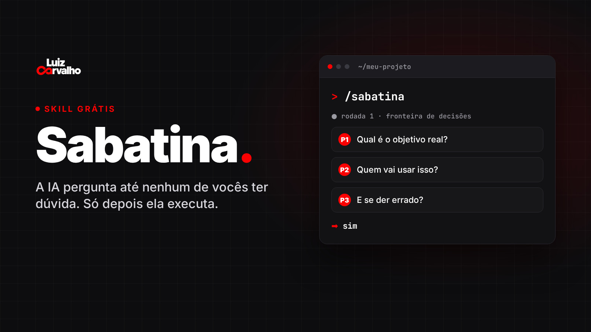

O que é a skill Sabatina?
A skill Sabatina é um arquivo de instruções que faz a IA perguntar antes de executar. Ela funciona no Claude Code, no Codex CLI e em outras ferramentas que leem arquivos SKILL.md. Você descreve um plano, uma ideia ou uma tarefa, e a IA passa a interrogar você. Primeiro, ela organiza o assunto como uma árvore de decisões. Em seguida, faz as perguntas em rodadas numeradas, sempre com uma recomendação pronta. Ou seja, um simples sim aprova a sugestão dela. Além disso, quando a resposta depende de um fato do seu projeto, a própria IA investiga os arquivos em vez de perguntar a você. A sabatina só termina quando não sobra nenhuma dúvida, nem sua nem dela. Por isso, a IA não executa nada antes da sua confirmação. A skill é gratuita, de código aberto sob licença MIT, e está no GitHub. Ela serve para sistemas, sites, projetos, relatórios e textos.
Se eu tivesse que escolher apenas uma skill, com certeza seria essa. Ela é a mais simples e a mais poderosa que eu conheço. Hoje, eu não consigo trabalhar sem ela.
Por isso, resolvi compartilhar. Neste post, você vê como a Sabatina funciona e como instalar. Além disso, o arquivo completo está no final, pronto para copiar.
Por que vale a pena deixar a IA perguntar antes de executar?
Vale a pena deixar a IA perguntar antes porque a maior parte do retrabalho nasce de uma suposição que ninguém disse em voz alta. Quando você pede algo vago, a IA preenche as lacunas sozinha. Ela escolhe o público, o formato, a tecnologia e o tom sem avisar. Como resultado, você só descobre a escolha errada quando o trabalho já está pronto. A Sabatina inverte essa ordem. Primeiro, ela lista as decisões que dependem só do que já foi dito. Depois, apresenta todas de uma vez, cada uma com a recomendação dela. Assim, você corrige o rumo antes da primeira linha de código ou de texto. Por outro lado, as perguntas que dependem de uma resposta ainda aberta ficam para a rodada seguinte. Isso impede a IA de chutar. No fim, ela pergunta o que você quer fazer com o resultado da sabatina.
Como a Sabatina funciona
A skill tem uma única ideia: transformar o seu pedido numa árvore de decisões e percorrer essa árvore com você. Na prática, ela segue cinco regras.
- Árvore de decisões. Cada escolha abre ramificações para as decisões que dependem dela. Por exemplo, decidir o público muda as perguntas sobre formato.
- Rodadas pela fronteira. A fronteira reúne as decisões que já podem ser tomadas sem adivinhar nada. A IA dispara toda a fronteira de uma vez e espera as respostas.
- Recomendação em cada pergunta. As perguntas vêm numeradas, com a sugestão da IA. Portanto, responder "sim" aprova a recomendação dela.
- Fatos com a IA, decisões com você. Se a pergunta depende de um dado do projeto, a IA investiga sozinha com um subagente. Em contrapartida, toda decisão fica na sua mão.
- Fim só com a fronteira vazia. A sabatina acaba quando todos os galhos foram explorados. Em seguida, a IA pergunta o que você quer fazer com o resultado.
Como instalar
O jeito mais fácil é pedir para a sua própria IA. Primeiro, abra o Claude Code, o Codex ou outra ferramenta que use skills. Depois, cole o pedido abaixo.
Instale a skill sabatina para mim a partir de:
https://github.com/luizcarvalho/skills/tree/main/desenvolvimento/sabatinaSe preferir o terminal, a instalação manual no Claude Code usa três comandos. Eles baixam o repositório e ligam a skill na pasta de skills.
git clone https://github.com/luizcarvalho/skills.git ~/skills
mkdir -p ~/.claude/skills
ln -sfn ~/skills/desenvolvimento/sabatina ~/.claude/skills/sabatinaNo Codex CLI, troque ~/.claude/skills por ~/.codex/skills. Já em
outras ferramentas, use .agents/skills dentro do projeto. O passo a passo completo
está no repositório da Sabatina no GitHub.
Como usar
- Abra a IA na pasta do seu projeto. Assim, ela consegue investigar os fatos sozinha.
- Digite
/sabatinaseguido do que você quer fazer. Por exemplo:/sabatina quero criar um sistema de agendamento para a minha clínica. - Responda cada rodada pelo número da pergunta. Quando concordar com a recomendação, basta escrever "sim".
- No fim, diga o que fazer com o resultado: um plano, um documento ou a execução direta.
Além do comando, a skill também é acionada por frases como "faça uma sabatina", "prova de fogo", "teste de estresse" e "me interrogue".
Para que eu uso
Eu uso a Sabatina em quase tudo: sistemas, sites, projetos, relatórios e textos. Em outras palavras, ela entra sempre que existe uma decisão que eu ainda não tomei. É a skill que eu mais utilizo nos meus projetos de desenvolvimento de software com IA.
Ela também combina com outras skills. Por exemplo, eu sabatino a ideia de um vídeo antes de usar as skills de animação para Reels.
O arquivo completo da skill
Este é o conteúdo do arquivo SKILL.md, sem cortes. Para instalar sem o GitHub, crie uma pasta
chamada sabatina dentro da sua pasta de skills e salve o texto nela como
SKILL.md.
---
name: sabatina
description: Submeta qualquer plano, arquitetura ou ideia de negócio a uma sabatina implacável baseada em árvore de decisões. Elimina suposições ocultas e pontos cegos antes da execução. Use quando o usuário quiser blindar um projeto, testar a solidez de uma ideia ou acionar gatilhos como "/sabatina", "faça uma sabatina", "prova de fogo", "teste de estresse" ou "me interrogue".
---
Conduza uma sabatina implacável com o usuário até alcançarem um entendimento absoluto e blindado sobre o projeto. Mapeie todo o raciocínio como uma **árvore de decisões**: cada escolha abre ramificações para as próximas decisões que dependem dela.
Avance pela árvore em **rodadas**. A **fronteira** representa todas as decisões cujos pré-requisitos já foram resolvidos: são as perguntas que você pode fazer _agora_, sem precisar adivinhar respostas que ainda não ouviu. Dispare toda a fronteira de uma só vez na mesma rodada: numere cada pergunta e entregue imediatamente a sua recomendação estratégica. Depois, aguarde as respostas do usuário antes de avançar para a próxima rodada.
Estruture cada rodada exatamente neste formato:
```
* ❓ **P1**
**<título direto da decisão>**: <contexto e pergunta detalhada, podendo conter múltiplos parágrafos e opções claras de escolha>
➡️
---
* ❓ **P2**
**<título direto da decisão>**: <contexto e pergunta detalhada, podendo conter múltiplos parágrafos e opções claras de escolha>
➡️
```
Formule cada pergunta de modo que um simples "sim" do usuário aprove imediatamente a sua recomendação.
A cada rodada respondida, a árvore se reconfigura: decisões tomadas empurram a fronteira para frente e desbloqueiam as perguntas que dependiam delas. Recalcule a nova fronteira e dispare a próxima rodada. Qualquer pergunta que dependa de uma resposta ainda em aberto nesta rodada pertence a uma rodada _futura_, nunca à atual.
Buscar _fatos_ é sua obrigação, jamais do usuário. Sempre que uma pergunta da fronteira exigir um dado concreto do ambiente (arquivos, ferramentas, sistema, etc.), acione um subagente com janela de contexto limpa para investigar; nunca pergunte ao usuário algo que você mesmo pode descobrir. Não trave o fluxo por causa disso: uma investigação em andamento é um pré-requisito pendente, então apenas as perguntas dependentes dela aguardam o retorno do subagente; dispare o restante da fronteira imediatamente. As _decisões_ pertencem ao usuário: coloque cada uma na mesa e aguarde.
A sessão só termina quando a fronteira estiver vazia: cada galho da árvore de decisões explorado, sem nenhuma premissa oculta ou suposição silenciosa. Não execute nenhuma ação final até que o usuário confirme que vocês chegaram a um entendimento sólido e compartilhado. Por fim pergunte ao usuário o que ele deseja fazer com o resultado da sabatina.Perguntas que sempre chegam
- A Sabatina funciona fora do Claude Code?
- Funciona. O arquivo segue o formato SKILL.md, que o Codex CLI, o Cursor, o Gemini CLI e o Antigravity também leem. No Codex, a pasta de instalação é ~/.codex/skills. Nas outras ferramentas, use a pasta de skills configurada nelas ou a pasta .agents/skills dentro do projeto.
- Preciso instalar alguma dependência?
- Não. A Sabatina é um único arquivo de texto, sem código para rodar. Por isso, basta copiar a pasta para o lugar certo. Outra opção é pedir para a sua IA instalar a partir do link do GitHub.
- A IA vai executar alguma coisa durante a sabatina?
- Nenhuma ação final. A skill proíbe isso até você confirmar que os dois chegaram a um entendimento compartilhado. No entanto, ela pode ler arquivos do projeto para descobrir fatos, em vez de perguntar a você.
- Quantas rodadas de perguntas são?
- Depende do tamanho do plano. A sabatina termina quando a fronteira fica vazia, ou seja, quando todos os galhos da árvore de decisões foram explorados. Além disso, cada pergunta já traz uma recomendação. Assim, muitas vezes basta responder sim.
- A skill é gratuita?
- Sim. A Sabatina é de código aberto, sob licença MIT, e está no repositório luizcarvalho/skills, no GitHub. Portanto, você pode usar, adaptar e compartilhar à vontade.